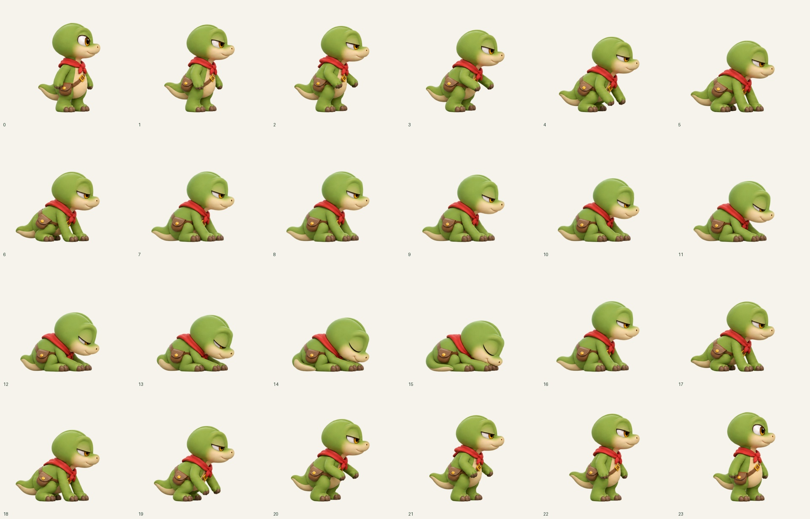

Studio history · Previous motion study · Approved baselineV0.8.0 · COMPLETE REST CYCLE · REVIEW CANDIDATE
A little rest. Ready again.
Dino sits, lowers into the accepted sleeping pose, rests, wakes and pushes back up to standing. One complete sequence, with chapter controls for each action.
Loading…
New pose contact sheet

Approved visual reference

Rendered study video · Transparent sprite atlas · Manifest
The lowering component v0.7.4 was accepted. This complete cycle is ready for review. Whole-body sprite poses remain visibly stepped, with small outfit/shape changes. Descent reuses the supported-rise drawings in reverse; early waking reuses the accepted lowering drawings in reverse. Breathing subtly scales the sleeping sprite. No texture dissolves or detached body-part patches. Previous releases and approved artwork are preserved.